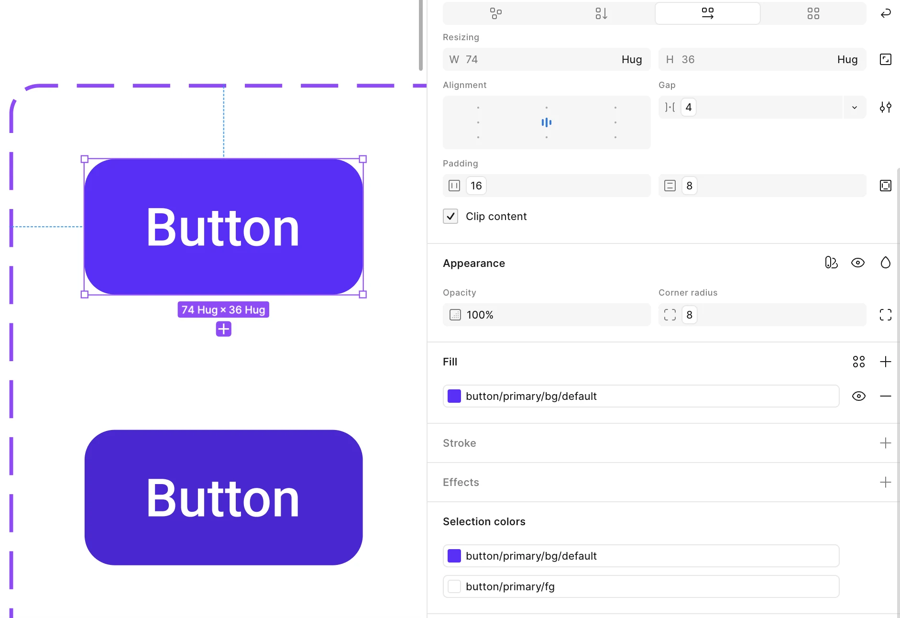
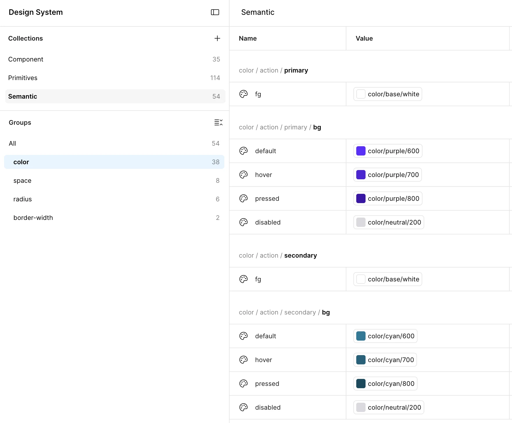
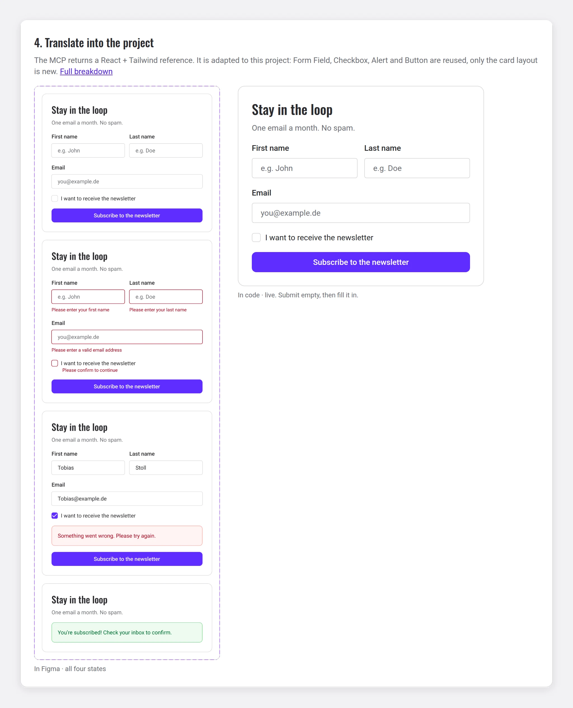

Case study · Design system · 2026 · Client under NDA
From 60 legacy components to one source of truth
A design system for a company building safety-critical software had grown for years without tokens, and parts of it lived only in code. In three months I made Figma the single source of truth, with a workflow straight into code, ready for AI-supported development.
- 60 → 30 core components
- 440+ tokens in three tiers
- 40 to 50 % less handover time
- Role
- Freelance UX consultant, set up the foundation of the design system with the team
- Team
- 3 developers, a UI designer (brand), a UX lead (requirements)
- Duration
- 3 months, plus a follow-up
- Tools
- Figma, Figma MCP, Claude, GitHub, my own Figma plugin
Context
Complete on paper. Nobody could trust it.
The system covered almost every case. Years of special requests had made it hard to use. Three problems, one system: each one points to the decision that solved it.
- Legacy Years of special cases Many components were built once, for a single device or use case. → Merge, don't just delete
- No tokens A loose color scheme Values were typed in by hand. → Three token tiers
- Two truths Code vs. Figma Parts only existed in code. Figma was out of date. → Figma as the single source
At the same time, the company was moving toward AI-supported development. Without a clean base, AI has nothing reliable to work from.
How do you turn a grown system into one source that designers, developers and AI can all rely on?
Hypothesis. If design and code read from the same tokens, handovers get shorter and the two truths stop drifting apart.
1 · Source of truth
Figma as the single source, for people and for AI
"Where does the truth live?"
Problem. Code was the de facto truth, but only developers could read it. Every handover meant translating between two sources.
Approach. We made Figma the core and let everything else read from it. Claude structures the tokens going in and runs a design QA on the components coming out. Then developers review the code in GitHub, adjust and approve it, and send it back to Figma. Every approved push updates the internal Storybook.
Result
Design, development, marketing and AI work from one system. Nobody copies a value by hand.
2 · Token architecture
Material's three token tiers, with the raw values locked
"How do we change a brand color without breaking anything?"
Approach. I followed Material Design's token model, a structure everyone on the team understood at once, and built the token base from zero with the UI designer. Reference tokens hold the raw values, system tokens name their purpose, component tokens apply them to one component.
The lock. Reference tokens are hidden from Figma users and not available to AI agents. Everyone works with system and component tokens only, so nobody binds a raw value by accident.
Button / Primary
button/primary/bg/default
button/radius
button/padding-x button/padding-y
People and AI
color/action/primary/bg/default
radius/action
space/inset/md space/inset/sm
People and AI
purple/600 #5F2CFF
radius/md 8 px
space/16 · space/8 16 × 8 px
Locked for AI agents and people
Simplified view: one variant, three properties. The full button uses more tokens for its states, text color and focus ring, 21 in the rebuild alone.
Result
440+ tokens: 100+ reference, 140+ system and about 200 component tokens. A brand color or a whole theme now changes in one place.
3 · The audit
Merge, don't just delete
"Which of these 60 do we really need?"
Tension. Many components had been built for one device or one use case. Deleting them would break real screens. Keeping them all would keep the chaos.
Approach. The team ranked every component by value: how often it was used and how often its pattern repeated. I guided the process and gave feedback. Duplicates went, variants were cut, and many special components merged into one flexible component for several use cases. Where a real need was missing, a new component was built.
Result
30 standardized core components, all maintained in Figma. Nothing lives only in code anymore.
What I would do differently
The first rounds were bumpy. We started building before the components were properly prioritized, and had to go back and do our homework. Next time, the ranking comes first and the building second.
4 · Tooling
Build the bridge instead of buying Enterprise
"Do we need Figma Enterprise for this?"
Tension. Figma's Variables API needs an Enterprise plan, and the client considered upgrading. I advised against it: most Enterprise features didn't fit their use case.
Approach. I built a Figma plugin instead. It imports token structures defined with Claude and exports all tokens to GitHub in one commit. Missing references are reported on import, which doubles as a naming check.

Result
A small tool instead of a recurring license. Tokens reach the repository in one click.
The workflow
Two tracks to code, one way back
This is how tokens and components moved between design and code at the client. Two checks keep it clean: a design QA before any code exists, and a developer review before anything goes back to Figma.
Design QA before code
Every component runs through the same four steps before it becomes code.
-
Read
See the bindings, not just pixels
Claude reads the component via the Figma MCP. A screenshot shows how it looks, the MCP shows what every layer is bound to.

-
Compare
Flag what does not belong
Foreign tokens, mixed-up tokens and hard-coded values are flagged. Example: the first read of the Sign-up Card in the rebuild.
-
Fix in Figma
Correct it at the source
Errors are fixed in Figma, never patched in code. Every value points to a system token again.

-
Read again
A clean second read, then code
Only a component that comes back clean becomes code. Figma and code then share the same tokens and states.

Result
Design QA became a routine step instead of a visual guess. In the rebuild, the first read found four problems, the second came back clean.
Try it in the rebuild
The client work is under NDA, so I rebuilt the workflow with my own design system, with a Storybook-style demo you can click through. This page uses it too. The one difference: in the rebuild, Claude turns the Figma MCP output into HTML and CSS instead of React and Tailwind.
Collaboration
The harder part was not the tooling
- Accessibility vs. brandMarketing uses the system too, so WCAG AA was a target. That meant adjusting brand colors. I made the case with concrete examples, and the brand side agreed.
- Developers and habitsMoving the source from code to Figma changed routines. Most developers were positively surprised and now call it a productivity gain.
- One voiceI was the single point of contact between brand, UX lead and development, so every question got one answer, not three.
Results
One language, faster handovers
The system went live in 2026. It is a technical foundation, so end users do not see it directly yet. The gains so far show in how design and development work together.
- 30 core componentsAll maintained in Figma, nothing left only in code.
- 440+ tokens in three tiersAligned with the brand and WCAG AA, the raw values locked.
- One source across teamsDesign, development, marketing and AI work from the same system.
- A repository, not a handoff fileDevelopers start from ready tokens and base code.
The follow-up
The client hired me again. For security reasons, not everyone should need an external design tool, so I defined, tested and built an internal Storybook with Claude: tokens, components, guidelines and copy-ready code, usable without Figma or GitHub. It updates itself from the repository.
What I took away
AI needs a frame, and building it is design work
- AI needs a frameClaude only builds reliable code from a clean, bound system.
- Merging beats deletingMost special components were the same pattern with different content.
- Names are a contractRenaming after an import creates duplicates. Agree on naming before you scale.
Curious how the merge decisions played out, or how the internal Storybook is built? That's the part I like to tell in person.
Let's talkNext case study